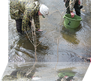
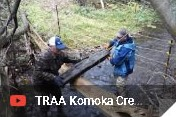

Header Images


Header Logo
Header Images

Welcome to the TRAA
Dedication Today for Tomorrow
"For the enhancement, protection and promotion of a viable, multi-species fishery within the Thames River watershed
Stream Habitat Work Party

Took place on Saturday, October 13, 2018
Dans vidA few TRAA members cleared a number of fallen trees and
other blockages on October 13th.
Dan Shinkelshoek made a video of the proceedings and
it's worth a look so click on the picture to view.
If you have further questions about TRAA stream habitat projects
and events, please come out to the TRAA General Meeting on
Wednesday, November 14th or Contact Us.
TRAA Gear is now available!
Many of you have already ordered the TRAA tee shirts, but if you haven't you had better hurry because many sizes are almost sold out! These are a steal at $15 each.
There are three different hat colours available: Clay Grey, Burnt Orange and Taupe. If you thought the tee's were a good deal, all three editions of these hats are also priced at $15 each.
We now have some nice stickers featuring the TRAA logo that you can display on your vehicle, boat, lunchbox or wherever you like. These are $2 each but you get one for joining the TRAA as a member or renewing an existing TRAA membership.
Get your TRAA Gear (makes a great Christmas gift!) at any TRAA event, such as this coming General Meeting.
Special Thanks:
Over the past couple of years the folks at Melchers Construction Ltd have offered up their beautiful boardroom for TRAA executive meetings. It's an ideal space with all the amenities required for us to accomplish all the "behind the scenes" work of the TRAA. Many thanks go out to the continued support of Melchers Construction Ltd.
Members of the trout hatchery rotation know the woes we've had with lighting in the hatchery. Even with larger fixtures installed a few years ago, it was still frustrating on days when the mercury dipped below -15C and the fluorescent technology just teased us with its dull flicker. Enter Mike Jeffries of Guillevin Greentech in London with nice set of bright and dependable (and new!) LED fixtures. Once they were installed it was like working in well-appointed laboratory.
mumaThe TRAA voted unanimously to re-name the TRAA trout hatchery honouring Keith Wales' memory and his unselfish support of the TRAA's work in the London area, in particular Komoka Creek. Special thanks go out to Muma Manufacturing in St. Thomas for donating the beautiful laser-cut aluminum sign.
Try
After cleaning up the area around the TRAA shed and trout hatchery, our trailer was quite full and needed to be emptied. A big 'thank you' goes out to Rick Vandersluis and Mike Seabrook of Try Recycling who allowed the TRAA to empty the trailer at their facility free of charge.
Angling Sports
Before we could take the trailer to Try Recycling, we needed to get the spare tire for the trailer fixed. Pat Devincenzo, proprietor of Angling Sports, offered to get it repaired. Turns out the tire needed replacing and Pat took care of it.
Angling Sports also supplied cards for all TRAA members that entitle them to a discount equal to the tax on anything in the store.
Thanks Pat, your generosity is greatly appreciated.